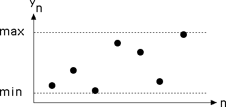
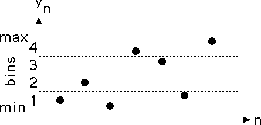
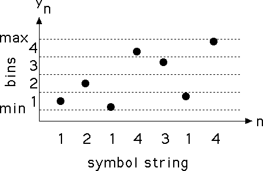

| One method of converting the measured data
y1, y2, ..., yN
into a symbol string
i1, i2, ..., iN
is first to find the range of the values, that is, the
interval between the maximum (max) and the minimun (min)
of the yi. |
|  |
| Next, divide the range (min, max) into four
equal-size bins: |
| yk lies in bin1 if min ≤ yk < min + .25⋅(max - min) |
| yk lies in bin2 if min + .25⋅(max - min) ≤ yk < min + .50⋅(max - min) |
| yk lies in bin3 if min + .50⋅(max - min) ≤ yk < min + .75⋅(max - min) |
| yk lies in bin4 if min + .75⋅(max - min) ≤ yk ≤ max |
|
|  |
| The numbers separating the bins are called bin boundaries,
B1, B2, and B3: |
| B3 = min + .75⋅(max - min) |
| B2 = min + .50⋅(max - min) |
| B1 = min + .25⋅(max - min) |
|
| Each yk lies in one of these bins, so we can
convert the sequence y1, y2, y3 ... into the symbol string
i1, i2, i3 ...
of 1s, 2s, 3s, and 4s associated with the data. Here is an example. |
| ik = 4 if yk lies in bin4 |
| ik = 3 if yk lies in bin3 |
| ik = 2 if yk lies in bin2 |
| ik = 1 if yk lies in bin1 |
|
 |
|
| Click on the picture
to animate. |
|
| Here is a time series generated by the logistic map,
and the driven IFS produced using equal-size bins. |